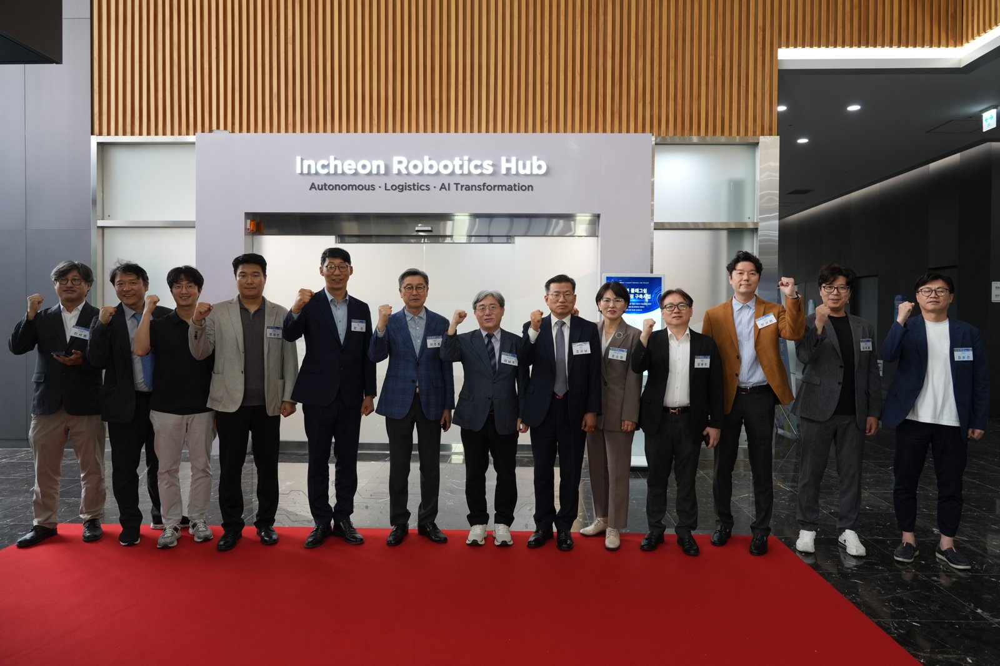
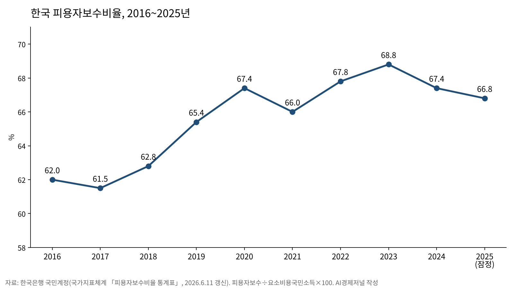

로봇과 일자리·노동 몫, 한국·미국·유럽·중국 실증논문 네 편 비교
한국 로봇 도입 기업과 미도입 기업의 고용 증가율 격차 약 2%
미국 로봇 1대당 고용 3.3명 감소, 유럽·중국 노동 몫 엇갈림
AI경제저널=김갑봉 기자 | 정소라·성낙일 서울시립대 연구진은 로봇을 도입한 국내 기업의 고용 증가율이 미도입 기업보다 평균 약 2% 낮았다고 분석했다. 논문은 2024년 6월 한국은행 경제연구원 학술지 『경제분석』에 실렸다.

국제로봇연맹(IFR)은 지난 4월 8일 2024년 나라별 제조업 로봇 밀도를 발표했다. 한국은 제조업 노동자 1만 명당 1220대로 세계 1위다. 세계 평균은 132대다.
한국은행 국민계정의 피용자보수비율은 2023년 68.8%에서 2025년 66.8%(잠정)로 두 해 연속 내려갔다. 요소비용국민소득 가운데 피용자보수로 돌아간 몫이다.

국내외 실증논문 네 편은 기업·지역·산업 단위에서 로봇과 고용, 임금, 노동소득분배율의 관계를 추정했다.
국내 로봇 도입 기업과 미도입 기업의 고용 증가율 차이
정소라·성낙일 연구진은 통계청 「기업활동조사」 자료를 썼다. 분석 대상은 상용근로자 50인 이상 기업 가운데 2017~2021년 해마다 관측된 8771곳이다. 최종 관측치는 3만6883건이다.
2021년 로봇 도입 기업은 191곳으로 2.2%다. 하우스만-테일러 추정에서 로봇 도입 계수는 -0.020으로 1% 수준에서 유의했다. 실질임금 증가율에 미친 효과는 통계적으로 뚜렷하지 않았다.
연구진은 300인 이상 기업으로 좁히면 효과가 더 분명해졌다고 밝혔다. 로봇 도입 기업의 고용 증가율은 미도입 기업보다 4.2% 낮았고, 실질임금 증가율은 3.5% 높았다.
연구진은 대기업에서 로봇이 노동을 대체하는 동시에 생산성도 높였다고 분석했다. 다만 상품 수요가 늘지 않아 고용 증가로 이어지지 않았을 가능성을 제시했다.
미국 로봇 1대당 고용 3.3명 감소
대런 애쓰모글루(Daron Acemoglu)와 파스쿠알 레스트레포(Pascual Restrepo)는 1990~2007년 미국 통근권역을 분석했다. 두 사람의 소속은 미국 매사추세츠공대(MIT)와 보스턴대다. 논문은 2020년 『Journal of Political Economy』에 실렸다.
연구진은 유럽 나라들의 로봇 도입 흐름을 도구변수로 썼다. 노동자 1000명당 로봇이 1대 늘면 지역의 인구 대비 고용률은 0.39%포인트, 임금은 0.77% 낮아졌다.
지역 사이 파급까지 더한 나라 전체 효과는 고용률 0.2%포인트, 임금 0.42% 하락이다. 연구진은 이를 로봇 1대당 노동자 3.3명의 고용 감소로 환산했다.
유럽 6개국 상위 기업으로 쏠린 생산성과 마크업
요엘 슈티벨레(Joel Stiebale) 연구진은 유럽 제조업을 분석했다. 논문은 2024년 12월 『International Journal of Industrial Organization』에 실렸다. 프랑스·독일·이탈리아·스페인·핀란드·스웨덴의 14개 산업, 2004~2013년 자료다.
산업의 로봇 재고가 1로그포인트 늘 때 초기 생산성 상위 10% 기업의 총요소생산성은 2.4% 높았다. 초기 마크업(한계비용 대비 가격 비율) 상위 10% 기업의 마크업은 4.2% 높았다. 하위 80% 기업의 마크업은 낮았다.
매출 하위 20% 기업은 매출의 28%를 인건비로 썼고, 상위 20% 기업은 16%를 썼다. 연구진은 로봇 노출이 1로그포인트 늘 때 산업 노동소득분배율이 약 3.12% 낮아지는 연관을 계산했다.
이 가운데 3.09%는 기업 안에서 일어난 하락이고, 기업 사이 재배분 항 몫은 0.034%다. 연구진은 이 결과를 인과 효과가 아닌 연관(association)으로 표현했다.
중국 상장기업의 노동 몫 증가
중국 신장대학교 두쥔훙(Junhong Du) 연구진은 2011~2019년 중국 A주 상장기업 관측치 5645건을 분석했다. 논문은 2024년 8월 『Sustainability』에 실렸다.
연구진은 지역 로봇 침투도가 1% 높아지면 기업 노동소득분배율이 0.047%포인트 오른다고 해석했다. 5% 수준에서 유의한 결과다. 미국 로봇 자료를 도구변수로 쓴 추정치는 0.0437로 10% 수준에서 유의했다.
효과는 동부(5% 수준)와 중부(10% 수준)에서 유의했고, 서부·동북부에서는 유의하지 않았다. 2011~2015년만 떼어 본 추정도 유의하지 않았다.
연구진은 로봇이 노동의 한계생산과 임금 사이의 괴리, 곧 노동가격 왜곡을 줄여 분배율을 높인 경로를 제시했다.
한국의 2026년 피용자보수비율은 한국은행이 2027년 6월 국민계정 잠정치로 공표한다.
참고문헌
- 정소라·성낙일, 「우리나라 기업의 자동화 기술 도입이 고용량과 임금에 미친 영향에 관한 실증분석」, 『경제분석』 30(2), 한국은행 경제연구원, 2024.6, 34~78쪽. https://doi.org/10.23299/bokeri.2024.30.2.002
- Acemoglu, D., & Restrepo, P., 「Robots and Jobs: Evidence from US Labor Markets」, 『Journal of Political Economy』 128(6), University of Chicago Press, 2020.6, 2188~2244쪽. https://doi.org/10.1086/705716
- Stiebale, J., Suedekum, J., & Woessner, N., 「Robots and the rise of European superstar firms」, 『International Journal of Industrial Organization』 97, Elsevier, 2024.12, 103085. https://doi.org/10.1016/j.ijindorg.2024.103085
- Du, J., Zhao, C., Hu, Y., & Chen, X., 「Impact of Industrial Robots on Labor Income Share: Empirical Evidence from Chinese A-Listed Companies」, 『Sustainability』 16(16), MDPI, 2024.8, 6928. https://doi.org/10.3390/su16166928
- "피용자보수비율 통계표", 국가지표체계(원자료 한국은행 국민계정), 2026.6.11, https://www.index.go.kr/unity/potal/eNara/sub/showStblGams3.do?freq=Y&idx_cd=F0137&period=N&stts_cd=F013701
- "Robot Density Surges in Europe, Asia, and Americas", International Federation of Robotics, 2026.4.8, https://ifr.org/ifr-press-releases/news/robot-density-surges-in-europe-asia-and-americas
[사진 출처]
- [사진 1] 인천광역시 반도체바이오과, 「인천시‘물류로봇 실증 특화거점’개소… 수도권 로봇산업 허브로」 보도자료 첨부 사진, 2026년 5월 22일, 공공누리 제1유형(출처표시), https://www.incheon.go.kr/IC010205/view?repSeq=DOM_0000000014744827